Социально-экономическое пространство России традиционно характеризуется значительной неоднородностью: субъекты Федерации заметно различаются по масштабам экономики, уровню доходов населения, инновационной активности, демографической динамике и состоянию рынка труда. Такая дифференциация создаёт серьёзные вызовы для проведения сбалансированной региональной политики и требует не только описания сложившихся разрывов, но и выделения устойчивых групп территорий со схожими чертами, а также количественного анализа факторов, определяющих их экономический потенциал. Актуальность работы обусловлена необходимостью перехода от усреднённых оценок к типологизации регионов, позволяющей адресно выявлять ключевые драйверы и барьеры развития для каждого типа территорий.
Цель настоящего исследования — на основе данных официальной статистики по 79 субъектам РФ провести многомерную классификацию регионов методами кластерного анализа и с помощью регрессионных моделей определить факторы, влияющие на величину валового регионального продукта на душу населения, в том числе с учётом принадлежности регионов к выделенным кластерам.
В соответствии с целью исследования, направленного на многомерную классификацию регионов и анализ факторов душевого ВРП, был сформирован исходный набор социально-экономических показателей. Сбор информации осуществлялся с официального сайта Федеральной службы государственной статистики (Росстат) за 2022–2024 гг.
Отобранные индикаторы: численность населения (тыс. чел., 2022); валовой региональный продукт (млн руб., 2024); численность исследователей, имеющих учёную степень (чел., 2024); число семей, получивших жилые помещения и улучшивших жилищные условия (ед., 2024); среднемесячная номинальная начисленная заработная плата (руб., 2024); численность безработных в возрасте 15 лет и старше (тыс. чел., 2024).
Из первоначальной совокупности исключены Москва, Санкт-Петербург, Московская область, ХМАО, ЯНАО, Ненецкий АО. Итоговый массив: 79 субъектов РФ.
| Код | Описание | Единица | Период |
|---|---|---|---|
| Population | Численность населения | тыс. чел. | 2022 |
| GRP | Валовой региональный продукт | млн руб. | 2024 |
| Researchers | Исследователи с учёной степенью | чел. | 2024 |
| Households | Улучшившие жилищные условия | ед. | 2024 |
| Wage | Среднемесячная зарплата | руб. | 2024 |
| Unemployed | Безработные (15+) | тыс. чел. | 2024 |
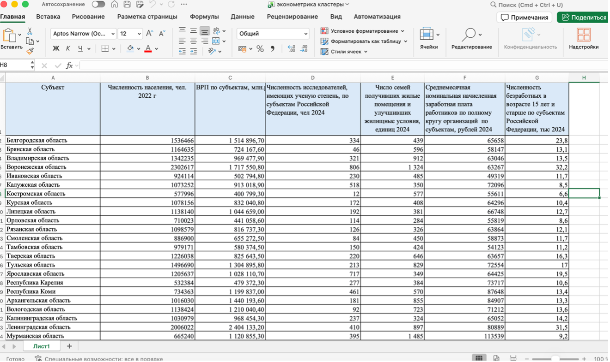
Проверка на пропуски показала их отсутствие. Применена MinMax-нормализация (значения в интервал [0,1]), сохраняющая форму распределения.
minmax <- function(x) { (x - min(x)) / (max(x) - min(x)) }
regions_norm <- regions %>% mutate(across(where(is.numeric), minmax))Построены точечные графики связи GRP с каждым фактором и боксплоты.
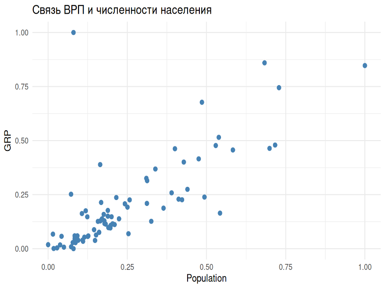
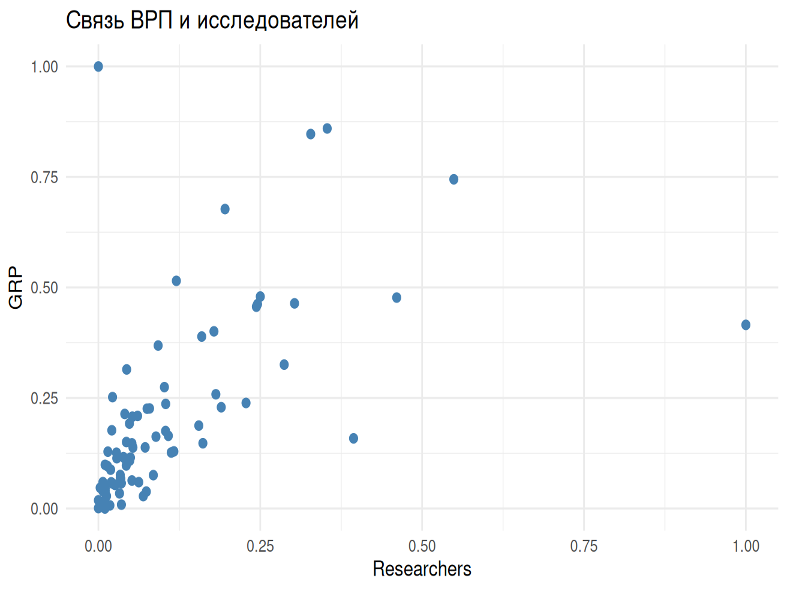
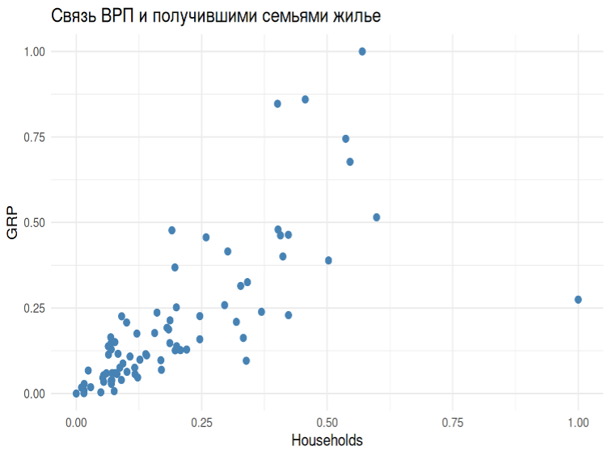
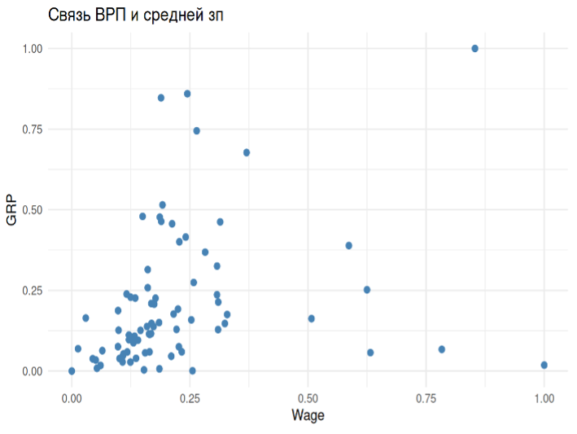
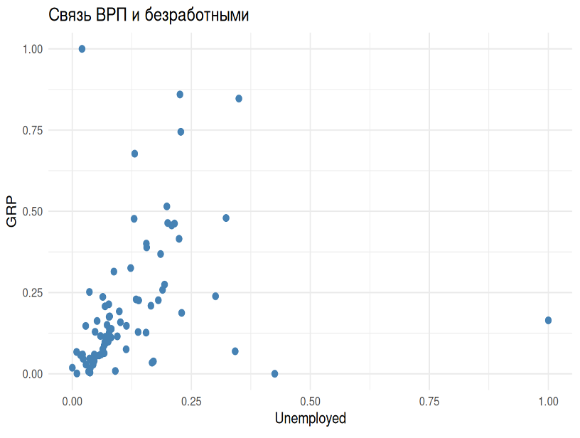
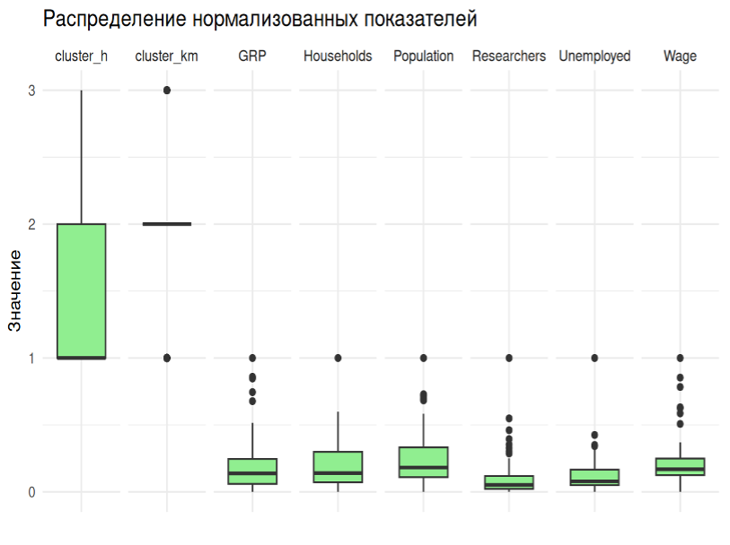
Рассчитана матрица евклидовых расстояний. Иерархическая кластеризация методом Варда (ward.D). Оптимальное число кластеров k=3 (сбалансированные группы). Дополнительно применён k-means. Тест Краскела–Уоллиса подтвердил значимые различия между кластерами (p-value < 0.05).
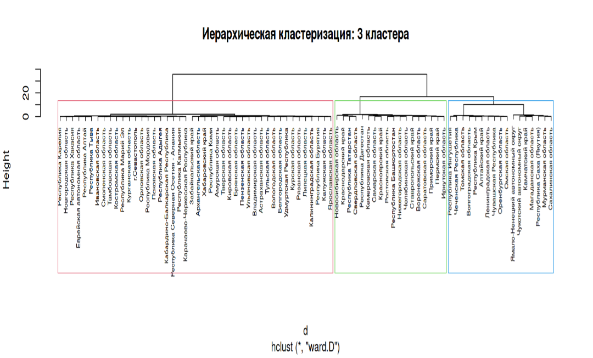
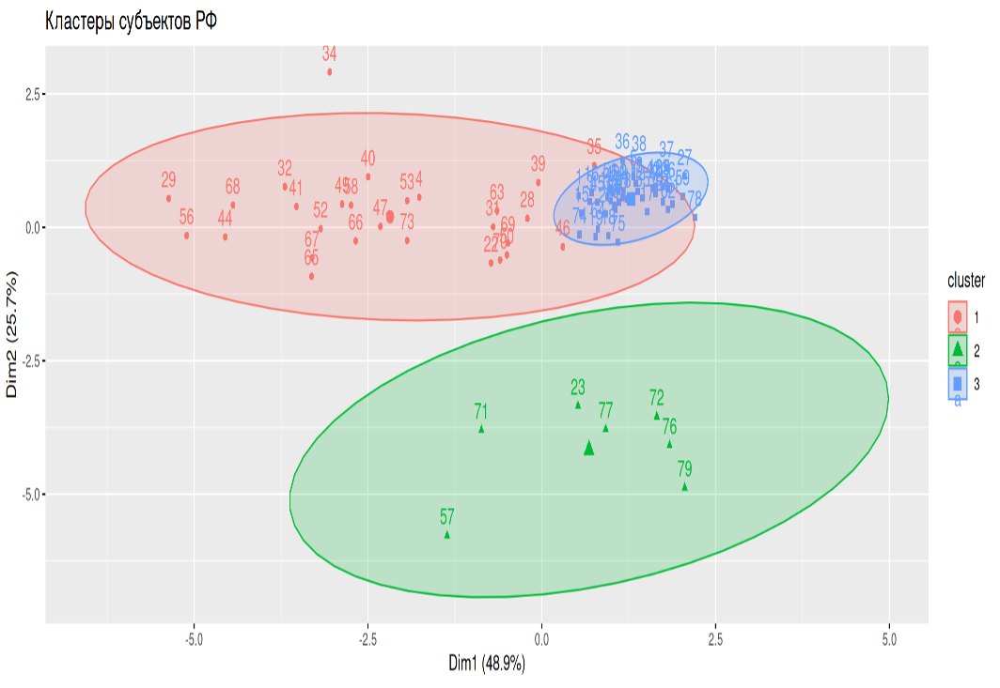
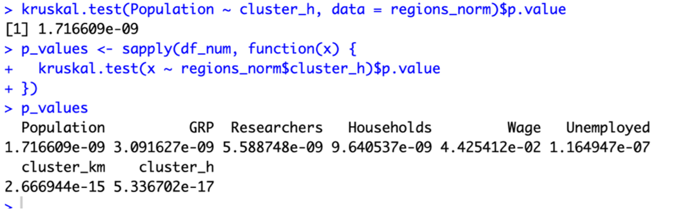
d <- dist(df_num)
hc <- hclust(d, method = "ward.D")
set.seed(123)
km <- kmeans(df_num, centers = 3, nstart = 25)Кластер 1 (Средний уровень) — 44 региона, низкие показатели GRP, населения, зарплат, низкая безработица.
Кластер 2 (Лидеры) — 18 регионов, высокие GRP, население, зарплаты, но высокая безработица.
Кластер 3 (Депрессивные) — 17 регионов, высокий GRP, максимальная зарплата, отрицательная миграция.
| Кластер | Регионов | GRP (млн руб.) | Population (тыс.) | Wage (руб.) |
|---|---|---|---|---|
| 1 (Средний) | 44 | 538 303 | 885 | 64 200 |
| 2 (Лидеры) | 18 | 639 828 | 3 216 | 74 500 |
| 3 (Депрессивные) | 17 | 1 491 263 | 1 163 | 94 000 |
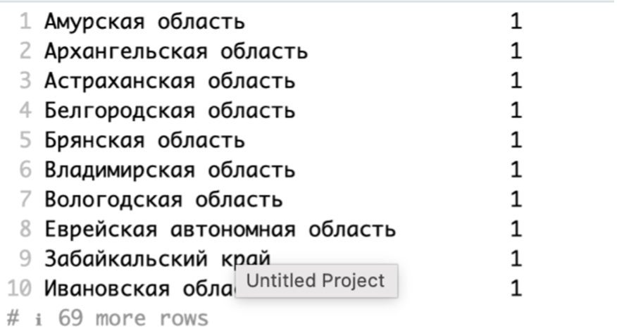
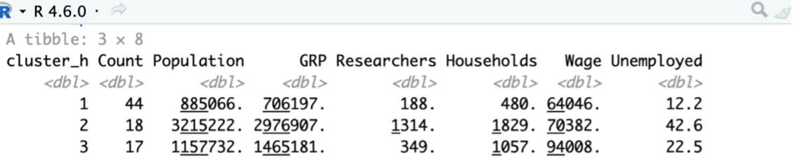
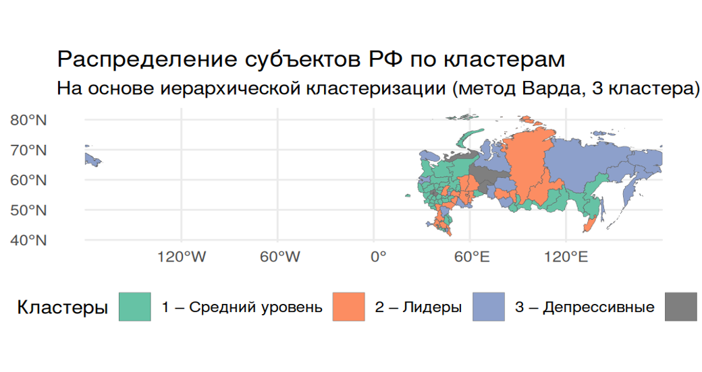
Для всей выборки построена множественная регрессия. После пошагового исключения (backward) получена оптимальная модель:
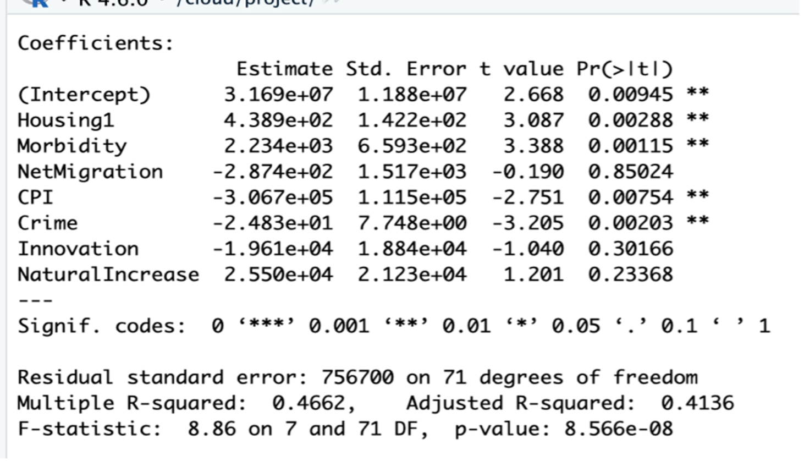
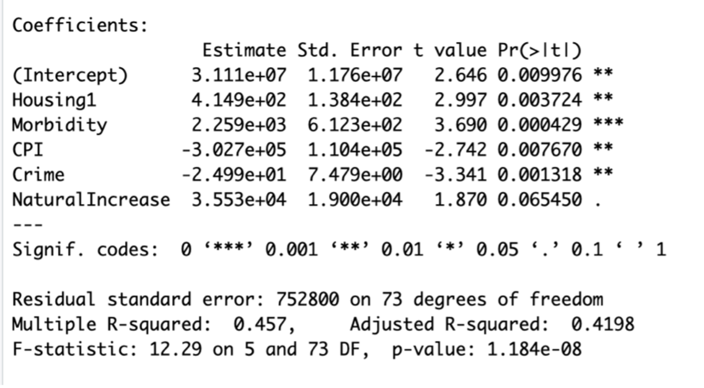
Добавлены дамми для кластеров (база — кластер 2 «Лидеры»). Коэффициенты при кластерах незначимы.
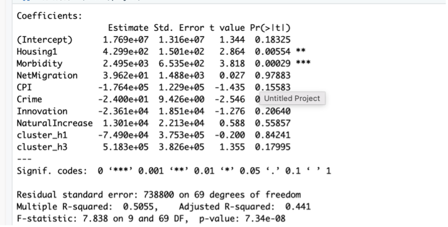
Для каждого кластера построены отдельные модели с пошаговым отбором. Структура факторов существенно различается.
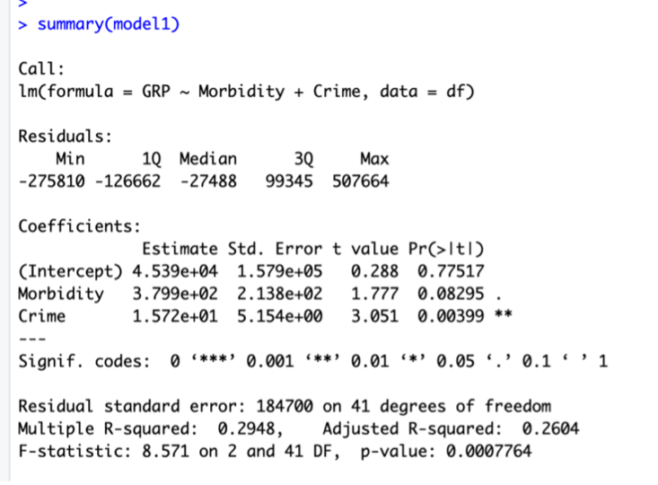
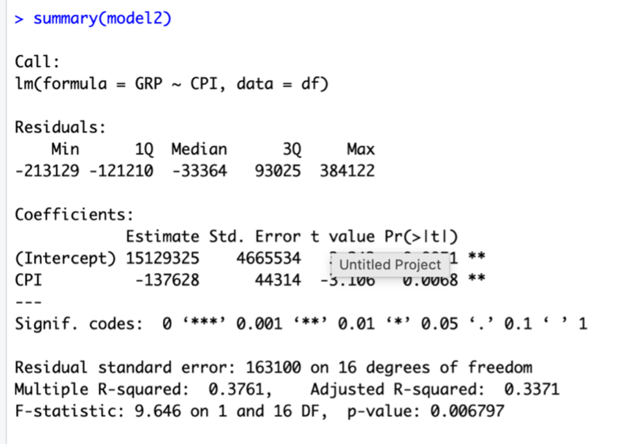
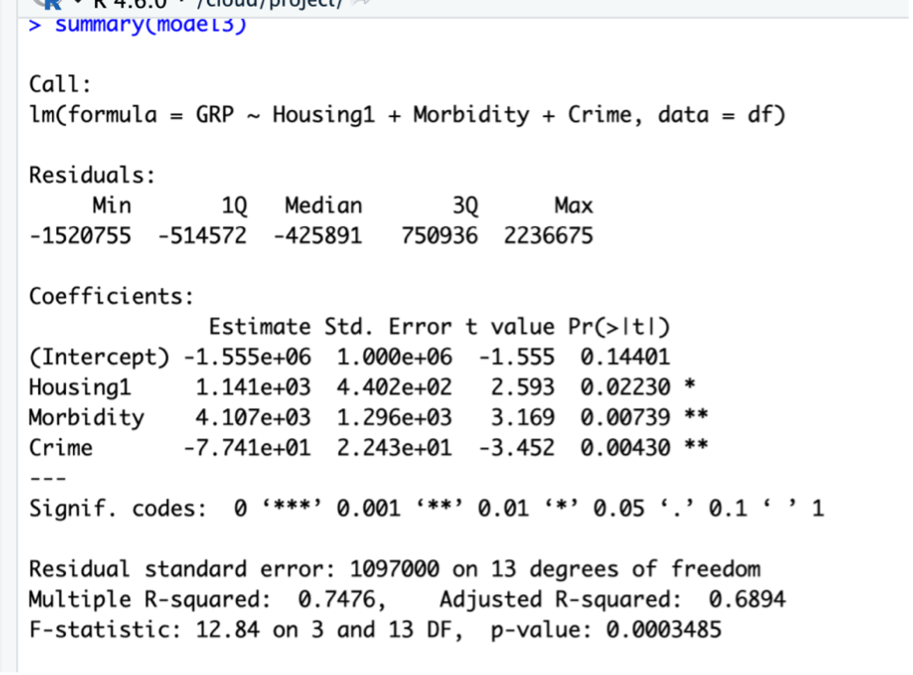
# Разделение данных и пошаговая регрессия
cl1 <- filter(reg_data, cluster_h == "1")
full_cl1 <- lm(GRP ~ Housing1 + Morbidity + NetMigration + CPI + Crime + Innovation + NaturalIncrease, data=cl1)
step_cl1 <- step(full_cl1, direction="backward", trace=0)В ходе исследования на данных по 79 субъектам РФ (исключая экстремальные регионы) методами кластерного анализа выделены три устойчивые группы регионов: «Средний уровень» (44 региона), «Лидеры» (18 регионов) и «Депрессивные» (17 регионов). Статистическая значимость различий между кластерами подтверждена тестом Краскела–Уоллиса (p < 0.05).
Регрессионный анализ показал, что для всей выборки значимое влияние на GRP оказывают жилищные условия (положительно), заболеваемость (положительно), инфляция (отрицательно) и преступность (отрицательно). Включение фиктивных переменных кластеров не дало значимых коэффициентов, то есть различия между группами объясняются уже учтёнными факторами. Внутрикластерные модели выявили разную структуру влияния: для лидеров ключевая роль инфляции, для депрессивных регионов — жилищные условия, заболеваемость и преступность (с отрицательным знаком), а для среднего уровня — специфические корреляции.
Полученные результаты могут служить основой для дифференцированной региональной политики.
Работа выполнена с использованием языка R, библиотек dplyr, ggplot2, cluster, factoextra, sf.